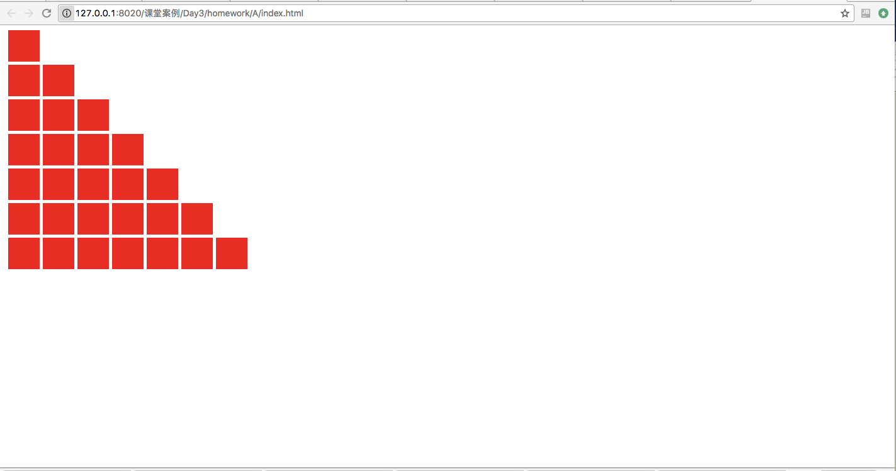

1.页面中有一个ul列表，共有10个li标签，为每个li标签添加序号文本：1，2，3，4，5，6，7，8，9，10（for,while各自实现一下） 2.页面中有一个ul列表，共有10个li标签，其中奇数项显示背景色红色，偶数项显示背景色黄色。（for,while各自实现一下） 3.页面中有一个ul列表，共有10个li标签，为每个列表项添加随机的背景色；页面中还有一个按钮，点击按钮，为每一个li更换随机的背景色。 4.利用for循环和document.write输出div标签字符串到网页上, 给div设置宽高各50px, 颜色红色, 拼成台阶子形。效果如下图； 5.利用for循环和document.write输出div标签字符串到网页上, 给div设置宽高各50px, 颜色红色,拼成菱形。效果如下图；